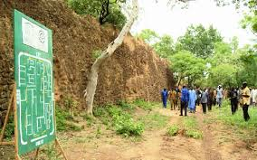

Les Ruines de Loropéni (UNESCO)
Description
Les Ruines de Loropéni sont un site archéologique majeur situé à environ 100 km au sud-ouest de Banfora. Ces ruines médiévales, datant du 11e au 15e siècle, témoignent de l'existence d'un ancien royaume fortifié. Le site comprend des murs de pierre, des tours et des structures qui ont résisté au temps, offrant un aperçu fascinant de l'architecture et de l'organisation sociale de l'époque.
Les visiteurs peuvent explorer les différents secteurs du site, découvrir les techniques de construction traditionnelles et apprendre sur l'histoire de ce royaume précolonial. Le site est particulièrement impressionnant pendant la saison sèche, lorsque les couleurs des pierres sont particulièrement vives.
Importance Historique et Culturelle
Les Ruines de Loropéni sont un site archéologique majeur de la région des Cascades du Burkina Faso. Elles témoignent de l'existence d'un royaume précolonial important qui a joué un rôle crucial dans les échanges commerciaux et culturels de la région. Le site est un lieu sacré pour les communautés locales, qui y pratiquent des rituels traditionnels et des cérémonies liées à l'histoire et à la mémoire collective.
Depuis les années 2000, le site est devenu une destination touristique importante, attirant des visiteurs du monde entier intéressés par l'histoire et l'archéologie. Des efforts de préservation sont en cours pour protéger ce patrimoine historique unique et maintenir l'équilibre entre le tourisme et la protection de l'environnement.
Informations Pratiques pour la Visite
- Localisation : Près de la ville de Loropéni, à l'ouest de Gaoua. Le trajet depuis Banfora est considérable (plusieurs heures) et nécessite une bonne organisation.
- Activités : Visite guidée du site archéologique, découverte de l'histoire, photographie.
- Meilleure période pour visiter : Pendant la saison sèche (octobre à mai) pour un accès plus facile.
- Équipement conseillé : Chaussures confortables, chapeau, crème solaire, eau.
- Conseils : Un guide officiel du site est indispensable pour accéder aux ruines et comprendre leur signification. Le site est protégé, il est donc crucial de respecter les consignes pour sa préservation. Compte tenu de la distance, il est souvent judicieux de combiner cette visite avec d'autres sites dans la région de Gaoua.

{kind=link}
{kind=link}